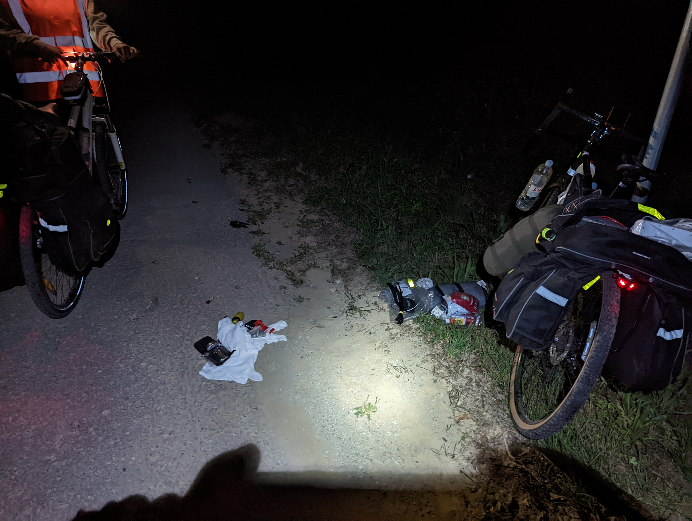
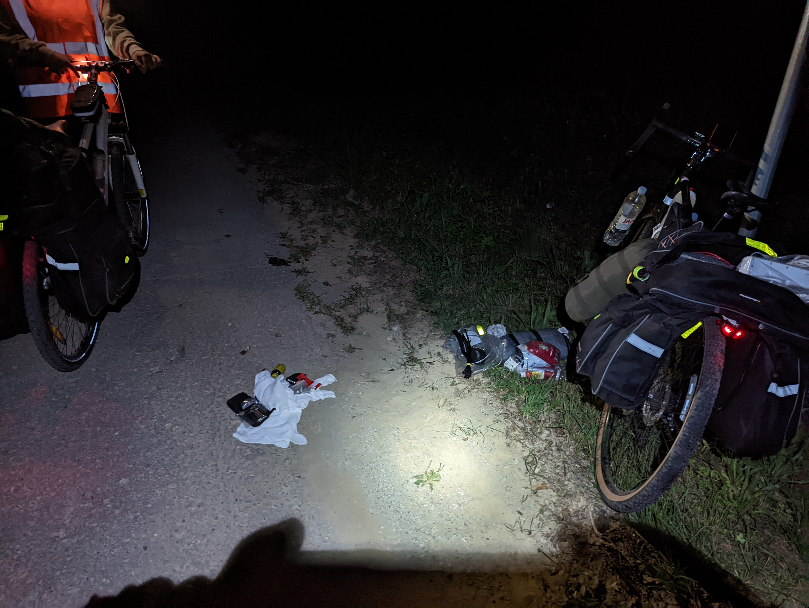

Pracovný názov: Plitvické jazerá
Zagreb -> Plitvické jazerá (180km)
Zagreb -> Plitvické jazerá (180km)
Vyrazili sme teda zavčas rána. Všade bola ešte noc, no my vybavení svetlami vzadu i vpredu, reflexnými vestami, pásikmi a čelovkami sme sa vydali na dlhú 12 hodinovú púť k Plitvickým jazerám. Jediný otvorený obchod v takejto nekresťanskej hodine bol Pekáreň Marija, prevádzkovaná milým Albáncom, ktorý keď sme mu povedali, ako nám veľmi chutilo, nám zdarma zabalil dve obrovské plnené tortilly s mäsom, zeleninou a dresingom, a mne sa nedalo inak, ako ho za tento akt dobročinnosti na mieste vyobijímať. Ešte teraz som z toho stále užasnutý, koľko dobrých ľudí na našej ceste stretávame. Práve kvôli nim aj napriek všetkým prekážkam, je to cestovanie nádherným a poučným zážitkom. No a keď hovoríme o prekážkach, tak by stálo za zmienku, že sme krátko po opustení Zagrebu museli opravovať Paťkinu roztrhnutú reťaz. Našťastie som disponoval rýchlospojkou, a tak sme do pol hodiny po menších zádrheloch, spôbosobených primárne mojou zbrklosťou, boli opäť schopní pokračovať ďalej. Šťekot psov sa nám stal orchestrom, ktorý sme boli odkázaní počúvať až do východu prvých slnečných lúčov. Psy vystriedali osy. Ak som to už teda nespomínal, v Chorvátskom vnútrozemí sme si zažili skutočné peklo s týmito poletujúcimi ihlami s jedom. Neustále počas bicyklovania na nás sadali a keď sme náhodou stáli, aby sme sa napili, liezli nám do prilieb a pod kraťase, a pripomínali nám, že sa máme čo najrýchlejšie pohnúť ďalej. Ako zázrakom sme však zo všetkých týchto momentov vyviazli bez ujmy na zdraví až na jednu príhodu keď Paťku uštipla osa cestou k moru do ruky, ale o tom sa ešte dočítate. Po takto krásne strávenom ráne sme okolo 3-tej došli do mestečka Slunj/Rastoky, poobzerali si historickú dedinku, naobedovali sa, rozložili stan v kempingu, pokradli hostiteľom slivky, vypili jedno zdravotné Ožujsko a následne už bola len tma. Hneď sme zaspali. Ani sme nevedeli ako a bolo ráno, nakoľko sme už večer nevládali nastaviť si budík, tak si aj pomerne prispali. V ten deň nás čakala síce krátka, ale stále do kopca idúca cesta s polkilometrovým prevýšením a po výkonoch z predošlého dňa nám aj pomyslenie na takýto krátky výkon obracalo žalúdky. Nuž ale čo, chceme to vidieť. Po prekonaní zdajne nezdolateľných kopcov sme zavítali do kempu, hodili sprchu a mali v pláne sa ísť naobedovať do kempovej reštaurácie, no ak sa nám obracali žalúdky už pri pomyslení na tie kompce sem, ceny ktoré sme uvideli na menu nám ich obrátili niekoľkonásobne tak. Pre ilustráciu obyčajné cestoviny tam stáli 30€ a ak by ste mali chuť na niečo výdatnejšie, dajme tomu rezeň, zaplatili by ste sumu blížiacu sa 60€, tak sme teda rýchlo dopili naše 10 eurové kávy, čo sme objednali ešte pred uzrením týchto cien, využili 10% zľavu, čo sme dostali k ubytovaniu a uháňali sa najesť dakde inde. No pri pohľade na hodinky nám chuť uplne prešla, ak sme chceli dnes stihnúť Plitvické jazerá, museli sme si pohnúť a ihneď vyraziť. Po krátkom prezisťovaní spôsobu dopravy sme nakoniec z pomedzi autobusov, taxíkov, boltov, pešibusov a vlakov si vybrali opäť staré známe bicykle, a tak sme k 30km z rána pripísali ďalších 20 k Plitvičkám do just takého istého kopca. Akoby toho nebolo málo, v cieli našej cesty sme zistili, že sme prišli východom, a tak sme si nemohli zakúpiť vstupenky. Lenže prichádzať východom má vždy jednu skrytú výhodu, a to tú, že všetci pri východe najpravdepodobnejšie odchádzajú, a tým pádom sa ich vstupenky stávajú len zdrapom papiera, ktorý však v správnych rukách môže byť opäť využitý ako vstupenka, a preto sme oslovili troch milých okoloidúcich chalanov a opýtali sa ich, či by nám neprenechali svoje vstupenky. A opäť sme sa presvedčili, že po svete chodia dobrí ľudia. Boli takí ochotní a takí radi, že nám môžu pomôcť a hneď povyberali malé zelené lístočky a predali nám ich do rúk. Bicykle sme si teda odložili do menšieho lesíka pri ceste, nakoľko na Plitvické jazerá sa bicyklom nesmie a následne už len strmým schodiskom schádzali do doliny ku krásnym, pokojným, modrým jazerám, nespočtu vodopádov, malých i veľkých a nádhernej prírode, ktorá lemovala krásnu scenériu, akoby vytrhnutú z Tolkienovej Stredozeme. Prechádzali sme sa a sledovali tento zázrak na Zemi, pod chvíľou sme si sadli a nedokázali sme uveriť tomu, že sme ešte pred týždňom sedeli doma a dnes sedíme tu, v krajine divov a pozeráme na rybky, ktoré sa hrajú v číro čistej vode pod našimi nohami. Mohol by som opisovať veľmi dlho, ako tam bolo krásne, ale myslím, že by som sa ani zďaleka nepriblížil k tej nádhere, a preto hovorím, že by si to mal každý zažiť na vlastnej koži. Po niekoľkých hodinách vdychovania tejto krásy, sme si spomenuli, akí sme to vlastne hladní, lebo sme celý deň nič nejedli, tak sme teda vyliezli po tých istých schodoch hor na útes a ešte posledný raz sa rozlúčili s týmto miestom, ktoré sa nám iste zapíše do pamätí a budeme naň spomínať ešte dlhé roky. Povečerali sme v reštaurácii s tématikou série filmov o indiánovi Winnetouovi a zaľahli spať, zajtra nás čaká more.

 
